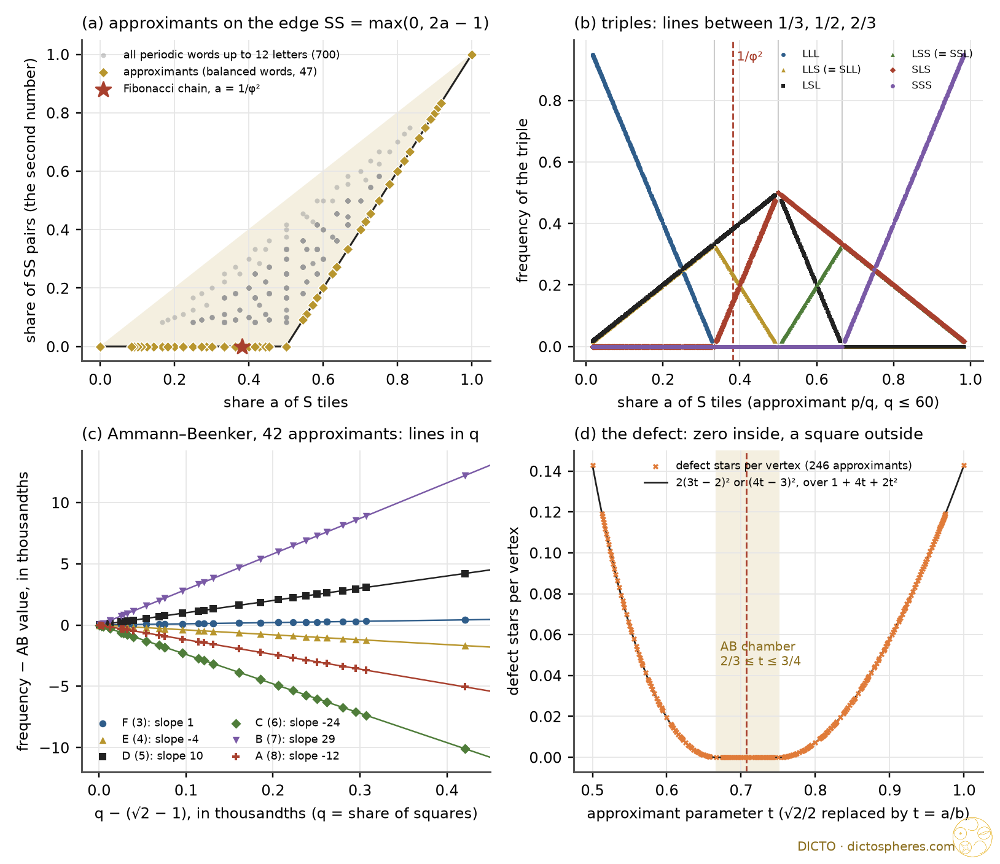
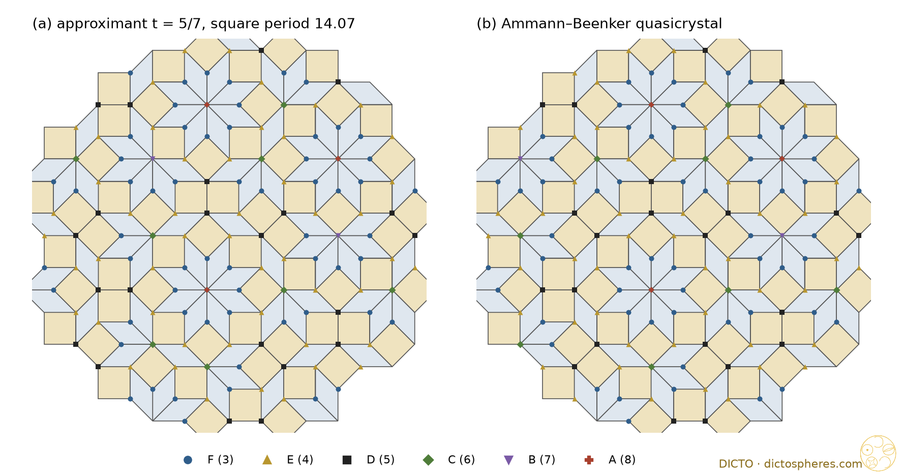

Every count of the periodic approximants of the Fibonacci chain, the Ammann–Beenker tiling and the 3D Penrose tiling, exactly, and the one number that orders them
All three families are cut-and-project sets: lattice points of Zn are kept when they lie in a strip around a plane E, and projected. The quasicrystal takes an irrational E (slope 1/φ², angle with √2, or icosahedral with φ); an approximant replaces the irrational number by a fraction, E becomes rational, and the pattern repeats. We used the canonical strip (the plane plus a unit cube) and a generic offset, and counted everything per period, exactly:
· 1D (scripts/sturm.py): the word sn = ⌊(n+1)a + r⌋ − ⌊na + r⌋, letter S (short) for 1 and L (long) for 0, a = share of S. For a = p/q the word repeats after q letters. All 1101 fractions p/q with q ≤ 60, every window (factor) length g = 1 to 9, the Fibonacci chain a* = 1/φ² = (3 − √5)/2 in exact arithmetic in Q(√5), and for contrast all 747 primitive periodic words of length up to 12.
· 2D (scripts/ab.py, abfam.py, ablaw.py): Z4 to the plane, star ek at angles kπ/4, Ammann–Beenker (AB) tiles: squares (edges e0, e2 or e1, e3) and 45° rhombs. A rational plane E′ with period lattice Λ = Z4 ∩ E′ is handled by an integer quotient map Z4 → Z2 with kernel Λ: one period of vertices is the set of integer points in a zonogon with integer edges, so every count is an integer and every acceptance area a fraction. Square approximants: √2/2 replaced by t = a/b in the rows (1, t, 0, −t), (0, t, 1, t); all 246 fractions 1/2 ≤ t ≤ 1 with b ≤ 40, plus the Pell ones up to 99/140. For contrast, 240 random rational planes of the same orientation. The quasicrystal in Q(√2).
· 3D (scripts/ico.py): Z6 to space with the icosahedral star (±1, φ, 0) and its cyclic shifts; cubic approximants replace φ by Fk+1/Fk = 1/1, 2/1, 3/2, … 55/34; tile counts only.
No floats enter any test; the splash runs on dicto-big-brother in seconds. Two facts used throughout and checked on every run: the number of tiles with edges {i, j} (or {i, j, k}) per period is the absolute 2×2 (3×3) minor of a basis of Λ — its Plücker coordinate — and the number of vertices per period equals the number of tiles.

Theorem 1 (Farey Window Law; classical in substance). For every window length g and every factor w of length g, the frequency of w in the approximant a = p/q is a straight line in a on each interval between neighbouring fractions with denominator ≤ g, and continuous across them. On the interval containing 1/φ² the Fibonacci chain lies on the same line, with values in Q(√5); the approximant Fn−2/Fn lies on the chain's window-g line exactly when g < Fn+2, and there its frequency differs from the chain's by (slope) × (p/q − 1/φ²).
Proof. The factor of length g starting at a letter is fixed by where nα + r falls among the g + 1 points −ka mod 1 (k = 0 … g); its frequency is the length of its interval, a difference of two such points, i.e. an integer combination m − ka, a line in a. Two points meet only when ka is a whole number, at fractions with denominator ≤ g; there the order changes and the line bends. For a = p/q the points lie on the grid of q-ths and a generic offset makes the count per period equal to q times the length exactly. The rule for Fn−2/Fn is the closed Farey interval of order g around 1/φ² (checked for g ≤ 300). ∎ Checked on all 1101 approximants for g ≤ 9: every frequency on every Farey interval is one line; complexity min(g + 1, q) factors; at most three distinct frequencies per length (the three-distance theorem, Berthé 1996); every approximant balanced.
The Window Law in 1D. At window 2 the perovskite form reads F(LL) + [F(LS) + F(SL) − 2F(LL)]·a + Δ·pSS with Δ = F(LL) + F(SS) − F(LS) − F(SL), the Swap defect. For approximants the second number is not free: pSS = max(0, 2a − 1), the smallest share of SS pairs any word with this a can have (Figure 1a; the other 700 words lie above). So every pair count of an approximant is a line in a on each side of 1/2, and its kink at 1/2 is exactly 2Δ: the Swap Rule (Δ = 0) holds exactly when the kink vanishes. On the Fibonacci side (a < 1/2), pSS = 0 for every approximant, not just in the limit: SS never occurs, as in #69. The kinks at longer windows follow the same pattern with the denominator as factor (window 3: at 1/3 the vector +3, −3, −3, +3 on LLL, LLS, SLL, SLS; at 1/2 the vector +2, −4, +2, +2, −4, +2 on LLS, LSL, LSS, SLL, SLS, SSL).
| window | chamber of 1/φ² | factor frequencies on it (lines in a), value at a = 1/φ² | approximants on the line |
|---|---|---|---|
| 1 | [0, 1] | S: a = (3 − √5)/2; L: 1 − a | all |
| 2 | [0, 1/2] | LS = SL: a; LL: 1 − 2a = √5 − 2; SS: 0 | from 1/2 |
| 3 | [1/3, 1/2] | LLS = SLL: 1 − 2a = √5 − 2; LSL: a; SLS: 3a − 1 = (7 − 3√5)/2 | from 1/2 |
| 5 | [1/3, 2/5] | adds LLSLL: 2 − 5a = (5√5 − 11)/2 | from 1/3 |
| 8, 9 | [3/8, 2/5] | three values: 2 − 5a, 3a − 1, 8a − 3 = 9 − 4√5 | from 2/5 |
Status: classical (Morse and Hedlund 1940 for balanced words and complexity; Berthé 1996 for the frequencies; the three-distance theorem). Ours: reading the Swap defect as half the kink, and the approximants as the lower edge of the Window-Law plane.
Result 2 (exact on all 42 square approximants with 2/3 ≤ t ≤ 3/4, b ≤ 40, and on the Pell ones up to 70/99 and 99/140). With R rhombs and Q squares per period, the six vertex stars of the AB tiling occur
F (3 edges) = Q, E (4) = 2R − 2Q, D (5) = −4R + 6Q, C (6) = 10R − 14Q, B (7) = −12R + 17Q, A (8) = 5R − 7Q,
and no other star occurs. Per vertex these are straight lines in the square share q = Q/(R + Q); at q = √2 − 1 they give exactly the AB frequencies √2 − 1, 6 − 4√2, 10√2 − 14, 34 − 24√2, 29√2 − 41, 17 − 12√2 (= 1/λ, 2/λ², 2/λ³, 2/λ⁴, 1/λ⁵, 1/λ⁴ with λ = 1 + √2). Edges counted by the stars at their two ends (9 kinds) are lines in (R, Q) on the same chamber, e.g. F–E edges 4R − 4Q, D–D edges −2R + 3Q.
So in 2D the share of squares plays the part of the hexagonality: one number, every count a line, the quasicrystal on every line (Figure 1c). The counts do not depend on the offset of the strip: for every square approximant the integer counts equal the exact areas of the acceptance domains. Example t = 5/7: 239 vertices per period, R = 140, Q = 99, stars A 7, B 3, C 14, D 34, E 82, F 99 (Figure 2).
The walls and the defect. Outside the chamber a seventh star appears: six edges with the two squares side by side at the vertex (AB never has this). Its number per cell of Nu = b² + 4ab + 2a² vertices is
X = 2(3a − 2b)² for t = a/b < 2/3, X = (4a − 3b)² for t > 3/4, X = 0 inside,
and every count is the chamber line plus a fixed multiple of X: (F, E, D, C, B, A, defect) shift by (0, 0, −1, +2, −3, +1, +1)·X (checked on all 246 square approximants, 1722 counts). This is the Window-Law shape again: a line in one number plus a defect term with a fixed coefficient vector, the 2D counterpart of the Swap defect +1, −2, +1. The new feature is the square: in 1D the forbidden SS pairs grow linearly beyond the wall (2a − 1), in 2D the forbidden star grows quadratically, because its acceptance domain is born at a point and grows in two directions (Figure 1d). The walls are the Pell approximant t = 2/3 and its quarter-turned partner 3/4 = 1/(2·2/3); 1/2 and 1 (the first Pell approximant and its partner) lie outside.
General approximants. For a rational plane without the four-fold symmetry the vertex counts are not fixed by the plane: on 229 of the 240 random planes (three offsets each), moving the offset of the strip changes them (a row of phason flips), e.g. one plane with tile counts 15, 30, 20, 27, 31, 26 gives 64 or 63 three-edge stars. Only the averages over the offset are fixed, and those are areas with large denominators, not linear in the tile counts. The tile counts themselves are always the Plücker coordinates. So the one-number law in 2D belongs to the symmetric (square) approximants, the ones used in practice.

Result 3 (exact, 1/1 to 55/34). For the cubic approximant φ ≈ p/q, the cubic cell spanned by the rows of the rational projection (scaled by q) holds
prolate = 4(p³ + 3p²q + q³), oblate = 4(p³ + 3pq² − q³)
rhombohedra, and as many vertices as rhombohedra. At p/q = φ the ratio is exactly φ : 1 (prolate share 1/φ, Q(√5)).
| approximant | 1/1 | 2/1 | 3/2 | 5/3 | 8/5 | 13/8 | 21/13 |
|---|---|---|---|---|---|---|---|
| prolate + oblate per cubic cell | 20 + 12 | 84 + 52 | 356 + 220 | 1508 + 932 | 6388 + 3948 | 27060 + 16724 | 114628 + 70844 |
| primitive cells per cubic cell | 2 | 1 | 1 | 2 | 1 | 1 | 2 |
| prolate share | 5/8 | 21/34 | 89/144 | 377/610 | 1597/2584 | 6765/10946 | 28657/46368 |
Every tile orientation agrees in sign with the quasicrystal's, so these are proper canonical tilings (the 1/1 lacks 4 of the 20 orientations). The prolate share of the approximant Fk+1/Fk is itself the Fibonacci ratio F3k+2/F3k+3 (all nine computed): the 3D approximants carry the 1D approximants of 1/φ in their tile counts, three steps at a time. The tile counts are window 1, so they are lines in the prolate share by definition; vertex types (24 kinds, Katz; 39 with decorations, Hann, Socolar and Steinhardt 2016) were not run.
| law | exact on | status |
|---|---|---|
| 1D: window-g frequencies are lines in a between Farey points of order g; ≤ 3 values; complexity g + 1; approximants balanced | 1101 approximants, g ≤ 9 | classical (Morse–Hedlund; Berthé 1996; three-distance theorem) |
| 1D: Fn−2/Fn on the Fibonacci window-g line iff g < Fn+2; offset from it = slope × phason strain | g ≤ 300 (Farey), g ≤ 9 (counts) | known in substance; this statement not found |
| 1D: approximants = lower edge pSS = max(0, 2a − 1) of the Window-Law plane; kink at 1/2 = 2 × Swap defect | 747 words | elementary; ours as framing |
| tile counts per period = Plücker coordinates of the period lattice; vertices = tiles | every plane, every offset | classical (canonical projection) |
| AB frequencies 1/λ … in Q(√2); square-approximant counts for the Pell sequence | exact | known (Baake–Grimm; Jagannathan–Duneau 2023, Table 1) |
| AB: six star laws linear in (R, Q) on the whole chamber 2/3 ≤ t ≤ 3/4; edge-pair laws; no other star there | 42 approximants | not found; new (empirical, exact) |
| AB: walls 2/3, 3/4; defect star X = 2(3a − 2b)², (4a − 3b)²; transfer vector (0, 0, −1, +2, −3, +1, +1) | 246 approximants | not found; new (empirical, exact) |
| AB: non-square approximants have offset-dependent vertex counts | 229 of 240 | known in substance (phason flips by window shifts) |
| 3D: prolate 4(p³ + 3p²q + q³), oblate 4(p³ + 3pq² − q³) per cubic cell; 1/1 = 20 + 12; prolate share F3k+2/F3k+3 | 9 approximants | formula not found; minors method classical |
Reference library (ask-library, seven searches: Sturmian factor frequencies / three-distance; periodic approximants cut and project; Ammann–Beenker vertex frequencies; Penrose vertex types de Bruijn; phason strain approximant linear; icosahedral cubic approximant 1/1 prolate oblate; Christoffel balanced words). Read: Kléman 2013, Defects in quasicrystals revisited I (pp. 1–5: approximants differ from the quasicrystal by flips, one per period for Fibonacci approximants); Baake 1999, A guide to mathematical quasicrystals (§13: defective vertex configurations, Baake–Joseph 1990 cited); Hann, Socolar and Steinhardt 2016, Local growth of icosahedral tilings (p. 3: acceptance domains, 24 vertex geometries, 39 cells). Catalogue entries only: Goldman and Kelton 1993; Yamada et al. 2021 (cubic approximants by linear phason strain); de Bruijn 1981 I, II; Fujita et al. 2013; Kramer 2011; Akiyama et al. 2026 (Sturmian lattices). Web: "Berthé 1996 frequencies of factors of Sturmian sequences" (Berthé, Fréquences des facteurs des suites sturmiennes, Theor. Comput. Sci. 165 (1996) 295–309, via bibliographic entry and citing surveys; full text not read); "Ammann-Beenker tiling periodic approximants vertex configurations frequencies square approximant defect" (read: A. Jagannathan and M. Duneau, Properties of the Ammann–Beenker tiling and its square approximants, arXiv 2308.07701 / Israel J. Chem. 2024, §§2.2, 3, 3.1, 3.2: AB frequencies (2.5), Pell approximants, Table 1 of vertex areas for n = 2 … 5, which our counts reproduce, rows of phason flips; search summaries of arXiv 1009.0136 and Mazáč 2212.09406); "1/1 cubic approximant 3D Penrose tiling 20 prolate 12 oblate" and a second query on the same (no source gives tile counts per cell; summaries of arXiv cond-mat/0402370, 2108.03341, cond-mat/0405298). In-house: #69 The Hexagonality Law and the Fibonacci Stacking (built on, not repeated: #69 has the letter and pair frequencies of the infinite chain and the stackings 15, 16, 26, 63); Splash Rules II perovskites and Frank–Kasper (Window Law, Swap pattern). Classical, cited not read: Morse and Hedlund 1940; Lothaire; Baake and Grimm, Aperiodic Order vol. 1 (2013); Duneau, Mosseri and Oguey 1989; Elser and Henley 1985; Katz 1988.
Conclusion: the approximants of a quasicrystal are ordered by one number, the share of one tile; on the chamber that holds the quasicrystal every count is a straight line in it with the quasicrystal on the line, because the approximants are exactly the patterns with the Window Law's defect term at zero; the defect lives only beyond the chamber walls, linear in 1D (twice the Swap defect at the kink) and a square in 2D. Status: done for 1D and 2D counts and 3D tile counts (study 2026-10-31-splash2-approximants). Not run, decided: Penrose rhombus approximants (the 2D case is covered by AB, whose window is a single octagon) and the 3D vertex types (a 3D acceptance arrangement; queue only if DICTO wants it).